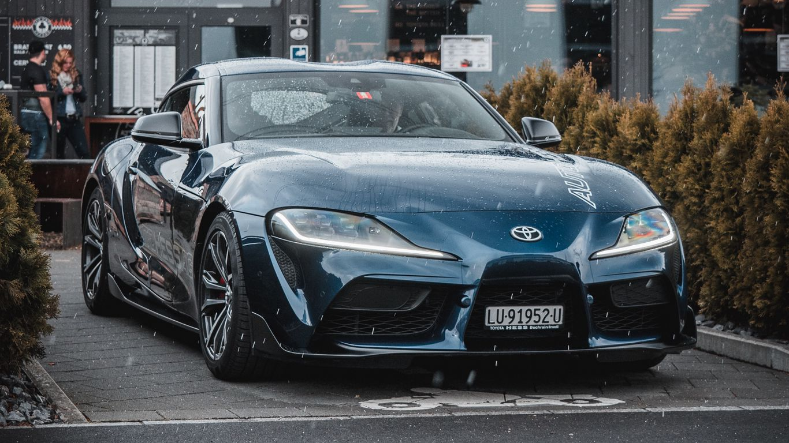
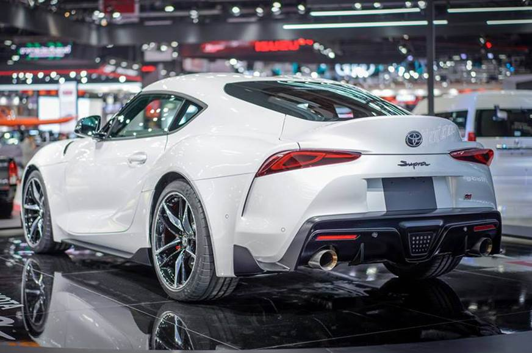

Toyota Supra
-:Fifth Genration Mk5 (A90):-
Toyota Supra
-:Fifth Genration Mk5 (A90):-
The fifth-generation Supra arrived with a completely different mission to its predecessors. While previous Supras had blended performance and luxury, this new car, co-developed with BMW, would be primarily a sports car.
The move didn't please every Supra fan, nor did the lack of a manual transmission. Still, turbocharged straight-six performance—courtesy of BMW's B58 3.0-liter—was still on the table, and the new Supra was lighter on its feet than its ancestors. It also produced acceleration numbers a second quicker to 60 mph and through the quarter-mile than the mighty MkIV Turbo.

Step [1] : First Go Down In Website Then Click On Log In.
Step [2] : After Click On Regestration,You See The Form So Kindly Feel Up The Form.
Step [3] : After The Filling Form,If You Want To Show Instant Price Or Any Other Features OF The Car Then Visit The Website Below.
Step [4] : Otherwise,In Few Hours Our Company's Emplooye Will Contact You By E-Mail Or Mobile Number For Your Sufficient Information.
Toyota's Supra